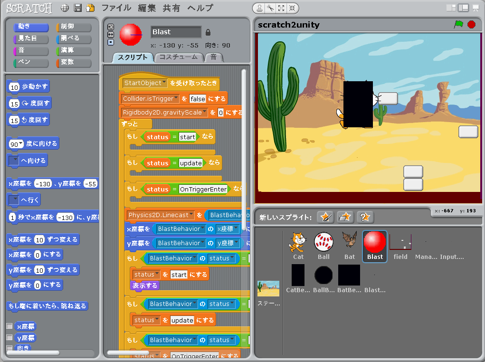
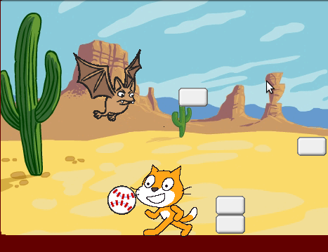

Scratch is developed by the Lifelong Kindergarten Group at the MIT Media Lab. See http://scratch.mit.edu
Scratch2Unity とは
scratch2unity は、 Scratch を使って Unity の流儀に基づいたゲームプログラミングを学ぶために作られたゲームプログラミング学習環境で、Scratch 1.4 を使って作られています。
もちろん Scratch は Unity のスクリプトを書くために使うことが出来ませんので、 scratch2unity は あくまで Unity を模しただけの擬似 Unity 環境です。
ただしプログラミング初心者が Unity 流プログラミング技法に慣れることが出来るように scratch2unity では色々な工夫がされています。
ではこの scratch2unity を起動した直後の画面を図1に示します。
スクリプトやスプライトの所に既に色々とプロックやキャラクターが配置されていますが、それらの使い方についてはこれから順を追って説明していきます。
図1: 起動直後の画面

scratch2unity を使って学習を進めていくと、最終的には図2のミニゲームが出来上がります。
自キャラとして Cat をキーで左右に動かしたりジャンプさせたりできます。さらに Ball を投げることが出来ます。
また敵キャラとして Bat が飛んでいて Ball を当てて倒せます。逆に Bat に Cat がぶつかるとゲームオーバーです。
図2: 最終的なゲーム画面
